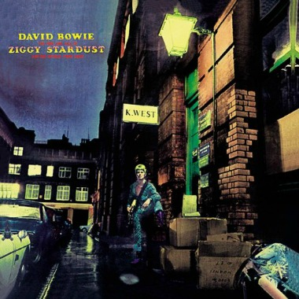

Música
La segunda cosa que mas hago en mi dia aparte de no hacer nada es escuchar música, escucho de todo tipo y me gusta mucho encontrar musica nueva que sea de mi agrado.

Mis géneros de música favoritos
Pop Rock
Bandas y artistas preferidos:
Hip Hop

Artistas preferidos:
Rock en Español